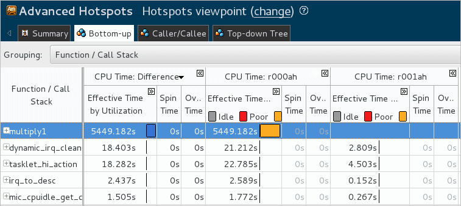
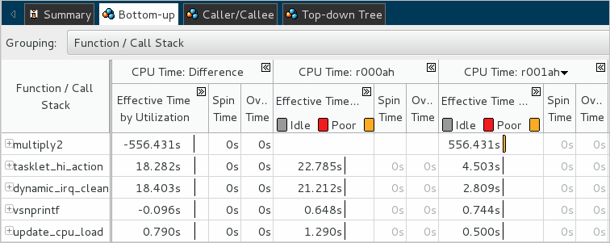

You optimized your code to apply a loop interchange mechanism that gave you
27 seconds of improvement in the application execution time. To understand whether you got rid of the hotspot and what kind of optimization you got per function, re-run the Advanced Hotspots analysis on the optimized code and compare results:
You optimized your code to apply a loop interchange mechanism that gave you
27 seconds of improvement in the application execution time. To understand whether you got rid of the hotspot and what kind of optimization you got per function, re-run the Advanced Hotspots analysis on the optimized code and compare results:
Compare Results Before and After Optimization
From the product menu select New > Advanced Hotspots Analysis.
VTune Amplifier reruns Advanced Hotspots analysis for the updated matrix target and creates a new result (for example, r002ah) that opens automatically.
Click the Compare Results
 button on the
Intel® VTune™ Amplifier toolbar.
button on the
Intel® VTune™ Amplifier toolbar.
The Compare Results window opens.
Specify the Advanced Hotspots analysis results you want to compare and click the Compare Results button.

The Summary window opens displaying application-level performance statistics for both results and their difference values.
Identify the Performance Gain
The Result Summary section of the Summary window shows difference information as follows: <Result 1 metric> – <Result 2 metric> = <metric Difference>.
You see that after optimization all metrics values have reduced significantly, though CPI Rate is still an issue (>1).

Switch to the Bottom-up window to view the CPU time usage per function for each result and their differences side by side.

Since for the second run you removed the multiply1 function, its time shows up in the Difference column as a performance gain.
Click the CPU Time:r001ah column to sort the data in the grid by this column.

The multiply2 function shows up on top as the biggest CPU Time hotspot for the result r001ah, though it performs better than multiply1. You may try to optimize the code further using more advanced algorithms, for example, block-structuring access to matrix data to maximize cache reuse.